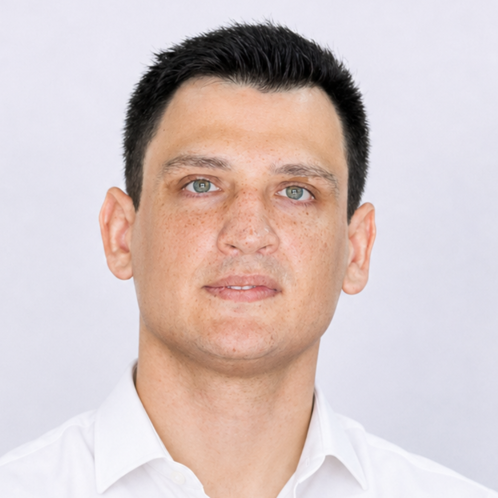

Forme-se como especialista em LLMs, agentes autônomos e IA generativa. Conecte ciência, engenharia e negócio com a excelência da UTFPR.
A Universidade Tecnológica Federal do Paraná (UTFPR) tem missão explícita de "desenvolver a educação tecnológica de excelência" orientada à solução de desafios reais da sociedade. O curso proposto dialoga diretamente com essa agenda, formando talentos e transferindo conhecimento para o tecido produtivo nacional, de forma alinhada com os marcos regulatórios que moldam a adoção segura da IA.
O curso de Especialização em IA Generativa, LLMs e Agentes Inteligentes está plenamente alinhado à missão da UTFPR e ao momento do ecossistema brasileiro. Ao conectar ciência, engenharia e negócio, o curso posiciona a UTFPR como referência nacional em formação aplicada em IA Generativa e como um instrumento direto de desenvolvimento regional e nacional sustentável.
Metodologia e Técnicas da Computação
(CAPES 1.03.03.00-6)
100% EaD
com aulas ao vivo
18 meses
3 semestres letivos
360 horas
12 disciplinas
Sem TCC
Capacitar profissionais para compreender, desenvolver, integrar e implantar soluções baseadas em Inteligência Artificial Generativa e LLMs, com fundamentação científica sólida, aplicação prática em problemas reais e conformidade ética, regulatória e de segurança.
Coordenação: Prof. Silvio Ricardo Rodrigues Sanches — DAEEC/LD — ia-londrina@utfpr.edu.br
Profissionais graduados em cursos superiores reconhecidos pelo MEC, de diversas áreas, que desejam se especializar em Inteligência Artificial Generativa para atuar na concepção, implementação e gestão de soluções baseadas em LLMs e agentes inteligentes.
Graduados em Computação, Engenharia, Ciência de Dados e áreas correlatas que buscam se especializar em IA generativa para alavancar a carreira.
Interessados em aprofundar conhecimentos em LLMs, agentes autônomos e técnicas avançadas de inteligência artificial.
De Administração, Educação, Saúde, Direito e demais áreas que desejam integrar IA generativa em suas atividades com embasamento técnico.
Aulas ministradas ao vivo, gravadas e disponíveis para acesso a qualquer momento.
Sextas-feiras à noite e sábados (manhã e tarde), preferencialmente de forma quinzenal.
Certificação UTFPR reconhecida pelo MEC, com peso institucional em todo o território nacional.
Modalidade EaD com aulas ao vivo e gravadas, acessíveis de qualquer lugar do Brasil.
Professores com doutorado e mestrado, experiência prática em projetos reais de IA e machine learning.
Conexão com profissionais e pesquisadores da área de IA em todo o ecossistema brasileiro.
12 docentes da UTFPR, todos com titulação de Mestre ou Doutor
Doutor • UTFPR
Doutor em Engenharia e Gestão do Conhecimento pela Universidade Federal de Santa Catarina (UFSC) e professor na UTFPR. Atua na área de Ciência da Computação, com ênfase em Inteligência Artificial e Ciência de Dados, incluindo Aprendizado de Máquina, Processamento de Linguagem Natural e Grandes Modelos de Linguagem (LLMs).
Doutor • UTFPR
Doutor em Engenharia de Produção e Sistemas pela Pontifícia Universidade Católica do Paraná (PUCPR) e professor na UTFPR. Atua na linha de pesquisa em mineração de dados, com ênfase em problemas de classificação e clusterização aplicados a diversas áreas do conhecimento.
Doutor • UTFPR
Doutor em Engenharia Elétrica pela USP, com Pós-Doutorado pela Colorado State University (EUA), e professor na UTFPR. Atua na área de Inteligência Artificial Aplicada, com ênfase em análise de dados, aprendizado de máquina e problemas complexos de otimização.
Mestre • UTFPR
Mestre em Ciência da Computação pela Universidade Federal do Rio Grande do Sul (UFRGS) e professor na UTFPR. Atua na área de Sistemas de Informação, com ênfase em indexação de documentos, bancos de dados distribuídos, extração de dados semi-estruturados e gerência de documentos.
Doutor • UTFPR
Doutor em Energia na Agricultura pela Universidade Estadual Paulista (UNESP) e professor na UTFPR. Possui experiência em desenvolvimento de softwares e hardwares aplicados à agricultura, automação, controle, monitoramento e modelagem de sistemas logísticos.
Doutor • UTFPR
Doutor em Ciência da Computação pela USP e professor na UTFPR. Atua nas áreas de computação paralela de alto desempenho, avaliação de desempenho de sistemas computacionais e escalonamento de workflows, com foco em otimização de recursos e eficiência.
Mestre • UTFPR
Mestre em Ciências da Computação pela Universidade Federal de Santa Catarina (UFSC) e professor na UTFPR. Atua na área de Ciência da Computação, com ênfase em Software Básico e programação, incluindo linguagens de programação, sistemas especialistas, programação web e fotogrametria.
Doutor • UTFPR
Doutor em Engenharia de Produção pela Escola de Engenharia de São Carlos (EESC/USP) e professor na UTFPR. Atua como docente e pesquisador nas áreas de Logística e Gestão de Cadeias de Suprimentos, Gestão de Operações, Inteligência Computacional e Gestão da Qualidade.

Doutor • UTFPR
Doutor em Ciência da Computação pela Universidade Federal de São Carlos (UFSCar), com Pós-Doutorado pela UNESP, e professor na UTFPR. Atua em projetos acadêmicos e industriais, com ênfase em Visão Computacional e Aprendizado Profundo.
Doutor • UTFPR
Doutor em Engenharia Elétrica pela Universidade Estadual de Londrina (UEL) e professor na UTFPR. Desenvolve projetos voltados ao aprendizado de máquina em tempo real, ajuste de detectores de concept drift e mineração de dados, aplicando técnicas avançadas de IA para problemas complexos em ambientes dinâmicos.
Doutor • UTFPR • Coordenador
Doutor em Engenharia Elétrica pela Universidade de São Paulo (USP) e professor na UTFPR. Atua na área de Inteligência Artificial, com ênfase em Visão Computacional e Aprendizado Profundo (Deep Learning), aplicando técnicas avançadas em reconhecimento e análise de imagens.
Doutor • UTFPR
Doutor em Ciência da Computação e Matemática Computacional pela USP e professor na UTFPR. Realiza pesquisas relacionadas à Interação Humano-Computador, Desenvolvimento Web e Engenharia de Software, com foco no desenvolvimento de soluções tecnológicas inovadoras e aplicadas.
Doutor • UTFPR
Doutor em Engenharia e Gestão do Conhecimento pela Universidade Federal de Santa Catarina (UFSC) e professor na UTFPR. Atua na área de Ciência da Computação, com ênfase em Inteligência Artificial e Ciência de Dados, incluindo Aprendizado de Máquina, Processamento de Linguagem Natural e Grandes Modelos de Linguagem (LLMs).
Doutor • UTFPR
Doutor em Engenharia de Produção e Sistemas pela Pontifícia Universidade Católica do Paraná (PUCPR) e professor na UTFPR. Atua na linha de pesquisa em mineração de dados, com ênfase em problemas de classificação e clusterização aplicados a diversas áreas do conhecimento.
Doutor • UTFPR
Doutor em Engenharia Elétrica pela USP, com Pós-Doutorado pela Colorado State University (EUA), e professor na UTFPR. Atua na área de Inteligência Artificial Aplicada, com ênfase em análise de dados, aprendizado de máquina e problemas complexos de otimização.
Mestre • UTFPR
Mestre em Ciência da Computação pela Universidade Federal do Rio Grande do Sul (UFRGS) e professor na UTFPR. Atua na área de Sistemas de Informação, com ênfase em indexação de documentos, bancos de dados distribuídos, extração de dados semi-estruturados e gerência de documentos.
Doutor • UTFPR
Doutor em Energia na Agricultura pela Universidade Estadual Paulista (UNESP) e professor na UTFPR. Possui experiência em desenvolvimento de softwares e hardwares aplicados à agricultura, automação, controle, monitoramento e modelagem de sistemas logísticos.
Doutor • UTFPR
Doutor em Ciência da Computação pela USP e professor na UTFPR. Atua nas áreas de computação paralela de alto desempenho, avaliação de desempenho de sistemas computacionais e escalonamento de workflows, com foco em otimização de recursos e eficiência.
Mestre • UTFPR
Mestre em Ciências da Computação pela Universidade Federal de Santa Catarina (UFSC) e professor na UTFPR. Atua na área de Ciência da Computação, com ênfase em Software Básico e programação, incluindo linguagens de programação, sistemas especialistas, programação web e fotogrametria.
Doutor • UTFPR
Doutor em Engenharia de Produção pela Escola de Engenharia de São Carlos (EESC/USP) e professor na UTFPR. Atua como docente e pesquisador nas áreas de Logística e Gestão de Cadeias de Suprimentos, Gestão de Operações, Inteligência Computacional e Gestão da Qualidade.
Doutor • UTFPR
Doutor em Ciência da Computação pela Universidade Federal de São Carlos (UFSCar), com Pós-Doutorado pela UNESP, e professor na UTFPR. Atua em projetos acadêmicos e industriais, com ênfase em Visão Computacional e Aprendizado Profundo.
Doutor • UTFPR
Doutor em Engenharia Elétrica pela Universidade Estadual de Londrina (UEL) e professor na UTFPR. Desenvolve projetos voltados ao aprendizado de máquina em tempo real, ajuste de detectores de concept drift e mineração de dados, aplicando técnicas avançadas de IA para problemas complexos em ambientes dinâmicos.
Doutor • UTFPR • Coordenador
Doutor em Engenharia Elétrica pela Universidade de São Paulo (USP) e professor na UTFPR. Atua na área de Inteligência Artificial, com ênfase em Visão Computacional e Aprendizado Profundo (Deep Learning), aplicando técnicas avançadas em reconhecimento e análise de imagens.
Doutor • UTFPR
Doutor em Ciência da Computação e Matemática Computacional pela USP e professor na UTFPR. Realiza pesquisas relacionadas à Interação Humano-Computador, Desenvolvimento Web e Engenharia de Software, com foco no desenvolvimento de soluções tecnológicas inovadoras e aplicadas.
Introdução aos fundamentos da IA moderna, aprendizado de máquina, redes neurais e conceitos básicos de modelos de linguagem.
Desenvolvimento de aplicações em Python voltadas à manipulação de dados, automação e integração com ferramentas de IA.
Construção de modelos preditivos supervisionados e não supervisionados utilizando bibliotecas modernas de Machine Learning.
Estudo de redes neurais profundas, RNNs, LSTMs, mecanismos de atenção e arquiteturas Transformer aplicadas à IA Generativa.
Uso prático de Large Language Models, incluindo embeddings, prompt engineering, fine-tuning e integração via APIs.
Desenvolvimento de estratégias de interação com modelos de linguagem, envolvendo engenharia de contexto, construção de prompts avançados e controle de respostas e técnicas para aumento de confiabilidade e desempenho em aplicações baseadas em LLMs.
Preparação, organização e recuperação de dados utilizando embeddings, pipelines e bancos vetoriais.
Desenvolvimento de aplicações baseadas em modelos de linguagem utilizando APIs, recuperação aumentada por contexto (RAG), memória conversacional, integração com bancos vetoriais e comunicação com sistemas corporativos.
Projeto de agentes inteligentes e sistemas autônomos capazes de executar tarefas, orquestrar ferramentas, automatizar fluxos de trabalho e interagir com múltiplos serviços utilizando modelos generativos.
Desenvolvimento de soluções com IA Generativa aplicadas à produtividade, análise documental, atendimento inteligente, automação organizacional e apoio à tomada de decisão em diferentes setores do mercado.
Planejamento e implementação de arquiteturas escaláveis para aplicações baseadas em LLMs, abordando serviços distribuídos, governança, segurança, observabilidade, MLOps/LLMOps e implantação em ambientes corporativos.
Desenvolvimento de projeto aplicado envolvendo concepção, modelagem, implementação e validação de uma solução baseada em IA Generativa e modelos de linguagem para resolução de problemas reais.
Especialização em IA Generativa, LLMs e Agentes Inteligentes
Universidade Tecnológica Federal do Paraná
Departamento de Engenharia Elétrica e Computação (DAEEC-LD)
Av. dos Pioneiros, 3131
Cidade Universitária - Londrina/PR - 86036-008
Acesse o formulário oficial de inscrição e garanta sua vaga na Turma 2027.
Inscreva-se no formulário oficial